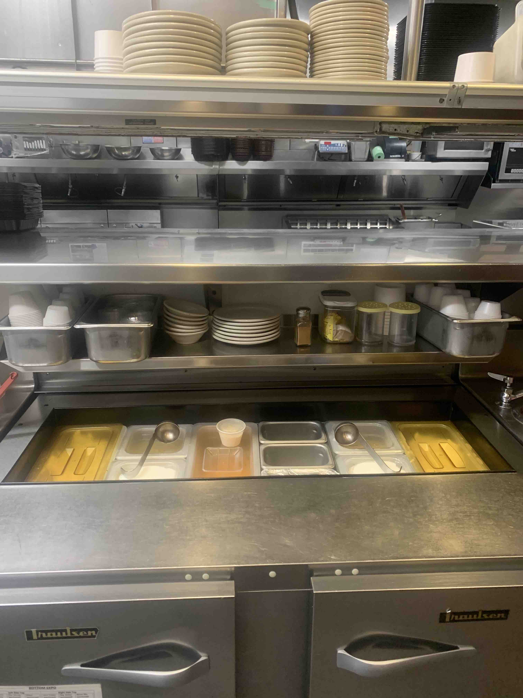
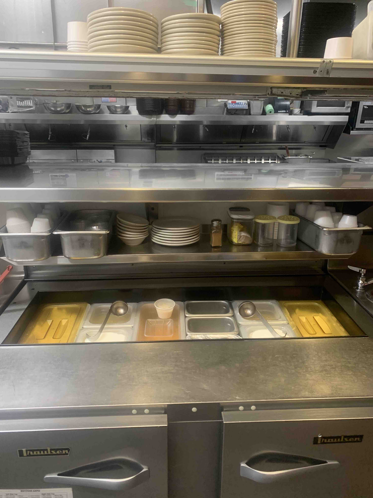
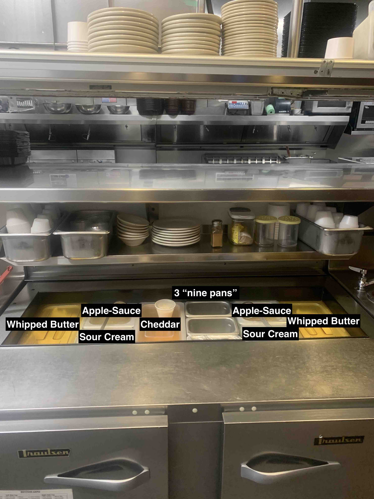

- Make sure you have at least 5 large and small ovals above the station.
- Fill up napkins.
- Fill up portion cups (Just like the picture, 1/2 small 1/2 big)
- If there is a container of lids, fill it up! (1/2 small lids, 1/2 big lids)
- Pull out items from the cold expo and clean the containers they are in.
- If you need to stock something, you need to get it from the walk-in NOT from below the station. (unless we don't have anymore)
- Discard the lemons, red onions, pickles, and parsley. Save the parmesan. Put a lid on it.
- Give dish your shakers, 3 "nine pans", and applesauce ladels.
- While you have items out of the station, clean the inside of cold expo thoroughly.
- Toothpicks, Burger picks, and Steak temp picks work really well to get the food out of cracks and corners of this station.
- Now its time to clean the station.
- Its suggested that you use a scrubbie, a towel will work but takes longer.
- Clean the ticket holder, the window (arms length), and the shelf using the scrubbie.
- Clean the dividers of the station. The inside of cold expo can be cleaned with a scrubbie as well!
- Once everything is clean and dry, you may reassemble the station
- You'll need to get lids for the food components and put back the ladels/nine pans/ shakers
- The station should look like the picture above, but here is a labeled image to make putting it back together easier:

- If you can put the lid on expo please do so. It is understandable that it is kept quite high for some people so if you need assistance, just ask!